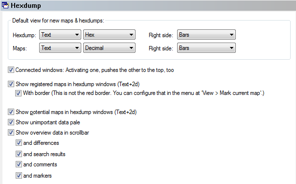

|
The dialog Configuration / View / Hexdump (Menu Miscellaneous) |

  
|
|
The dialog Configuration / View / Hexdump (Menu Miscellaneous) |
|

Default view:
Here you may define in which way new maps and hexdumps are displayed by default. You may choose the view mode (Text, 2d, 3d), the numeric system (10, 16) and the configuration for the right side (Empty, Bars, ASCII).
More options:
Here you can configure the activation behavior for connected windows.
Then you may toggle the display of registered maps with in hexdumps. Registered maps are marked with a colored background and optional a border.
Next you may toggle the display of potential maps with in hexdumps. Potential maps are marked with a border and a tag on the top. If you want to toggle the searching of these maps, please refer to the page named 'Automatically' / 'Background'.
Furthermore you can let WinOLS display unimportant data pale. Data is considered unimportant if it is recognised as program code or as empty areas. The data from the overview function is used for the display. That’s why the pale display only works when overview data was generated.
Then you can configure WinOLS to display the overview data in the (vertical or horizontal, depending of the view mode) scrollbar. This option requires that overview information was generated. Either in the background or manually by opening the overview dialog. For a reference of the colors, see the overview dialog. Furthermore you can configure if additional info is displayed here:
| · | White points at the left => Difference between original and version |
| · | Yellow triangle right => Position of a search engine |
| · | Yellow, dotted line right => Marker |
| · | Solid line right => Comment (In the comment's border color) |
Shortcuts
| Symbol bar: |
| Keyboard: | F12 |